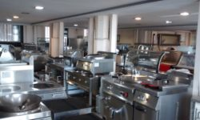

Welcome to Library@Crumlin
This is a new restaurant staffed by local college students. Library@Crumlin is overseen by Head Chef- Rory Ferguson. All other staff are hospitality and catering apprentices and students, who work both in term time and outside it. The students are schooled to achieve a standard indistinguishable from a professional restaurant.
About Us
The restaurant, which is named after the old library old premises, focuses on food using locally-sourced produce, with as many ingredients as possible coming from Dublin.This gives students the opportunity to achieve a solid grounding in specialised areas of Culinary techniques, Food safety management and producing a Culinary event. We are preparing our students to gain employment as Commis Chefs and obtain placement on the National Apprenticeship programme in Professional Cookery.
The following departments produce the students:
- Culinary Arts(Professional Cookery)- Level 5
- Culinary Arts(Professional Cookery)- Level 6
- National Traineeship in Professional Cookery
Crumlin College of Further Education is a City of Dublin Educational Trust Board (CDETB) college in Dublin